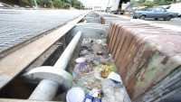

Tecnologia > Estruturas
Saiba tudo sobre as estrutas feitas em São Paulo para suportar as enchetes
por Andre, Daniel, Leonardo e Richard
Atualizado no ano de 2020
Cidade cresceu com processos que envolvem a impermeabilização do solo
Dado à atividade semestral em grupo “ATIVIDADE PRÁTICA SUPERVISIONADA” (APS), onde o objetivo encontra-se em desenvolver um site em HTML5 e CSS3, visando um tema escolhido pelo grupo que possua relevância social, no quesito progressão. Este documento é responsável por datar o desenvolvimento e conclusão do mesmo. Como o inicio de 2020 foi marcado por inúmeros problemas de enchentes que afetaram os próprios alunos responsáveis por esta tarefa, além de diversas outras regiões do Brasil. Chegou-se, por meio de discussão, à conclusão de que o assunto carrega devida importância social que os requisitos para o trabalho solicitam.
O intuito que se deseja atingir é de algo semelhante a uma página jornalística, em que a “manchete” traga consigo o peso dos efeitos das chuvas do inicio do ano. E que por meio de técnicas aprendidas no primeiro semestre do curso de ciências da computação, expresse-se uma página com recursos de design e mudanças de posicionamento de texto, onde haja dinâmica para que o usuário se situe no devido contexto.
Enchentes em São Paulo
Apesar das diversas tentativas de diferentes gestões, o problema das enchentes e as tragédias persistem...
Arquivo/Estadão Conteúdo
Estudiosos apontam a falta de infraestrutura da parte arquitetônica de décadas atrás, que poderiam divergir os causadores de alagamentos constantes, apontadas como principais causas: a falta de colaboração civil, a falta de limpeza e tratamento de esgoto e péssima administração governamental.
Com base na evidencia dos impactos de uma cheia, o ideal é desenvolver uma ferramenta para auxiliar a administração do sistema de drenagem, justificado pelos diversos problemas causados por cada evento na sociedade, mas São Paulo ainda não foi capaz de criar uma estrutura apta para interceptar tais fatores.
Alagamentos trava São Paulo
| Pontos de alagamento | São Paulo chegou a registrar 154 pontos de alagamentos ao longo desta segunda |
| Marginais | Tietê e Pinheiros chegaram a ficar fechadas em pontos com alagamento |
| Grande São Paulo | Além de Osasco, Pirapora do Bom Jesus, Taboão da Serra e Carapicuíba, que determinou estado de emergência, estão entre as cidades afetadas |
A cronologia das enchentes e inundações de São Paulo
Relembrando um pouco da história das enchentes paulistanas a partir de fins do século XIX até os dias atuais encontra notáveis continuidades, tanto em seus efeitos destruidores como nas causas que provocam tal fenômeno urbano, respeitadas, são claro, as dimensões da cidade ao longo desse tempo. Há, por certo, rupturas, algumas delas significativas, como o fato da produção de energia elétrica não ser mais fator provocador de enchentes, como ocorreu em grande parte do século XX. Aqui vamos apresentar e discutir algumas dessas continuidades no período que vai de 1890 até os anos atuais, na época em que grandes obras de engenharia ao longo dos rios Tietê e Pinheiros alteraram radicalmente a bacia hidrográfica, dando início à outra fase na história das enchentes na região de São Paulo.
A cidade sempre conheceu os transbordamentos dos seus rios e córregos na época das chuvas. Talvez um dos maiores motivos, se não for um dos principais, é o colapso que as enchentes provocam no deslocamento de pessoas e mercadorias. Até fins do século XIX, o núcleo central paulistano, no alto de uma colina, ficava em meio às várzeas alagadas dos rios Tietê e Tamanduateí. As cheias causavam alguns inconvenientes, como linhas de trens paravam de funcionar por conta de alagamentos, bloquear caminhos mais curtos para certas localidades, mas, esperadas como as estações do ano, não provocavam grandes tragédias na cidade que evitava ocupar baixadas e várzeas.

Fonte: Foto retirada em 1915, Rua 25 de março, sentido Mooca.
O fenômeno era comum antes e depois da canalização do rio Tamanduateí.
Em 1929 a enchente de São Paulo foi simbólica, por ter deixado vários pontos da cidade de baixo da água por sete dias. Foi tão marcante que até hoje uma chapa de bronze está cravada em uma calçada na Rua Porto Seguro, a 400 metros do Rio Tietê, para mostrar até onde a água chegou.
Na década de 1950/1960 nada mudava, a população continuava com inúmeros problemas com inundações em São Paulo, como sempre as chuvas e enchentes que se destacavam era a de verão e nem sempre as causas eram “naturais”. Segundo os índices pluviométricos, São Paulo estava entre os maiores do país e era a mais pura realidade, pois a estruturação urbana da cidade já vinha sendo adotado por alguns frutos de opções políticas e econômicas por parte do poder.
Principalmente em áreas que ficavam próximas aos rios da cidade, e as principais avenidas. Pois embaixo da maioria delas se passavam rios ou córregos, assim concebendo um antigo solo encharcado e devido às estruturas já não serem projetadas satisfatoriamente, facilitava para que apenas uma chuva não muito extensa já provocasse uma cheia nas devidas regiões.

Fonte: De volta ao cargo na década de 60, o prefeito Francisco Prestes Maia (foto)
Teve que lidar novamente com o problema.
Depois deste acontecido quase meio século depois da catástrofe, em 2017 a cidade sofreu novamente com enchentes e deslizamentos de terras deixando muitas famílias desabrigadas que foram levadas para abrigos da prefeitura da cidade após a tragédia.
Recentemente, agora em 2020 tivemos mais uma das enchentes históricas de São Paulo, no dia 10 de fevereiro a cidade parou, marginal Tietê transborda, rodízio de veiculo suspenso, escolas suspendem aulas, trens e metrôs suspendem funcionamentos, carros e ônibus até mesmo as motos não andavam em São Paulo. As pessoas não tinham como se deslocar até o trabalho, estudantes não conseguiam chegar às escolas e faculdades, poucas pessoas conseguiram fazer suas atividades normais do dia a dia. Os dois principais rios da cidade, Tietê e Pinheiros transbordaram o que não acontecia desde 2016 no Tietê e 2005 no rio Pinheiros na plenitude de sua dimensão, assim deixando as duas vias praticamente intrafegável.
Muitas pessoas ficaram ilhadas, na tentativa de chegar ao trabalho, e algumas permaneceram em suas casas pelo mesmo motivo. As orientações das autoridades foram para que os moradores permanecessem em suas casas, e não saíssem para tentar enfrentar as enchentes e os riscos que estavam retratados naquele dia.
E São Paulo foi o terceiro Estado do Brasil a vivenciar essa calamidade emergencial em 2020 por causa de chuvas. A um mês antes mais de 10.000 pessoas perderam suas casas em Espirito Santo, e no final de janeiro Minas Gerais tinha encarado um dos dias mais chuvosos dos últimos 110 anos na sua capital (BH), região metropolitana. Deixando mais de 8.000 pessoas desabrigadas e mais de 38.000 desalojadas. Mas, após a cidade de São Paulo viver um dia de transtorno e muitos perigos, a capital do Estado mais populosa do País sobreviveu a mais uma infelicidade trágica e recorrente.

Fonte: Marginal Tietê – rio Tietê 10/02/2020
O temporal atinge toda região da grande São Paulo.
Avaliações econômicas dos prejuízos causados pelas cheias na grande são Paulo
O fenômeno pode ser visto como benéfico quando, por exemplo, representa prosperidade para a agricultura, mas na verdade é uma característica de desastre Paulista com danos da ordem de milhares de reais e com tendência a se agravar, caso o governo não apresente uma estrutura cabível em relação aos alagamentos constantes, e não seja eficaz o suficiente para dissolver tais prejuízos eminentes e desagradáveis para a população.
O processo de urbanização desordenado ao longo do tempo intensificou a duração, a magnitude e a frequência das inundações que, quando atingem os centros urbanos de São Paulo, causam danos avassaladores como se pode perceber pela divulgação nas mídias. Estas geram diversos prejuízos sociais, econômicos e financeiros e representam custos significativos para toda a população, principalmente para os moradores de áreas potencialmente inundáveis.

Fonte: Prefeitura de São Paulo
Gráfico: Combate às enchentes.
As enchentes e seus prejuízos
À medida que a ação antrópica desenha as cidades, modifica o sistema de drenagem natural que por consequência intensifica o cenário das inundações.
Sem evidenciar a infraestrutura que a região de São Paulo oferece em consequências há tais atos descabidos.
“Desde o século 19, como relatam os professores, a cidade viveu seu desenvolvimento urbano com a construção de prédios e avenidas em áreas de cerca de 300 rios e córregos, hoje abaixo das obras de concreto.” Dizem Urbanistas ouvidos pelo Noticias R7.
As cheias urbanas abordadas se referem a qualquer acúmulo de água nas ruas e avenidas de áreas ocupadas em toda grande São Paulo, que atinjam a população e moradores do local em questão. O Descuido de investimentos governamental em aplicações de combate as enchentes causam transtornos e prejuízos, independente da causa ser uma forte chuva ou um sistema de drenagem ineficiente, além de uma parcela de culpa civil, não obedecendo muitas das vezes às leis ambientais. Portanto, será utilizada como sinônimo de enchentes, inundações ou alagamentos.
Gráficos de tempestades
Dados de duas estações meteorológicas, comprovam o aumento da frequência de chuvas externas na região Metropolítana de São Paulo nos ultimos 20 anos...
Fonte: Gráficos atualizados pela reportagem.
Dados de 2020 validos ate fevereiro, podendo ainda aumentar ate o fim do ano.
Grande sp vive dias de mortes, prezuisos, lama, botes e medo
Inundações e soterramentos deixam inúmeras mortes por desmoronamento, afogamentos e por doenças. Além de prejuízos na casa de Milhões de reais, que poderiam ser investidos em outros propósitos e até mesmo para combates as enchentes.

Fonte: Móveis estragados ocupam calçadas do bairro Júlia Zaremba/Folhapress
As perdas mais comuns em dias de enchentes são: Suspenções de aulas nas Faculdades e Escolas públicas e privadas, falta de energia, perdas de imóveis e automóveis (Carros, motos, aparelhos eletrônicos e mobiliários) e Desabrigados. Custos que a população não tem como acatar, fazendo com que o governo acate com tais prejuízos.
Piscinões
Picinões: È a alternativa eficaz para controle de enchentes/alagamentos urbanas, os piscinões foi à maneira mais viavel que o estado e conseguiu para barrar as enchentes/alagamentos, no ano de 2020 o prefeito do estado de São Paulo "Bruno Covas e João Doria", disse que iria envestir em mais de 18 piscinões no estado.
No ano de 2017 avia cerca de Dezessete piscinões em funcionamento na capital do estado de São Paulo, mas, no entanto até agora a prefeitura do estado entregou Oito piscinoes, e diz que até o fim do ano eles iram entragar mais Oito piscinões em funcionamento para a cidade.
Para que serve os piscinões
"Os piscinões tem o efeito de amortecimaento da cheia, ou seja, ele é um "buraco" que engole a maior parte da agua, enche e evita que as demais regiões fiquem com o acumo de agua e evita em certos casos as enchentees/alagamentos, e por fim ela é descarregada", diz o engenheiro Antonio Carlos zuffo.

Fonte: Piscinões evitam alagamentos
Na cidade de SP.
O maior piscinão do estado de São Paulo
O maior piscinão do estado de São Paulo foi construído na zona leste, a capacidade de água que ele consegue suporta e de 850 mil metros cúbicos de água, esse piscinão recebeu o nome de guamiranda, ele vai ajudar cerca de Um milhão de pessoas com o aumento da drenagem para o rio Tamanduateí. A construção desse piscinão foi realizada pelo Departamento de Águas e Energia Elétrica (DAEE) da Secretaria Estadual de Saneamento e Recursos Hídricos, já toda a manutenção do picisnão vai ficar por conta do estado.
|  Fonte: Piscinões de SP. |
 Fonte: Fotos para noticias. |
Guamiranda recebeu investimentos estaduais de 160 milhões de reais para a sua construção; A duração da sua construção foi de 4 anos, no local onde esta localizado atualmente, abrigou na década de 50 um parque industrial.
Limpeza dos piscinões
No piscinão de bananal (zona norte) e em outros estão ocorrendo diversas reclamações, não esta avento a limpeza necessária para o bom funcionamento dos piscinões, ocasionando perda de eficancia, porque, eles estão sempre sujos com terras, muitos lixo e entulhos. Pelo fato do piscinão do bananal esta localizada próximo a Brasilândia, ele também esta sendo frequentado por diversos usuários de drogas.
Enchentes | Possiveis soluções impermeabilizantes do solo
A impermeabilização do solo se da ao processo de cobertura do solo por materiais como cimentação, asfaltamento, calçamento e edificações, entre outros. São processos comuns para moradores de uma área urbana, que, no entanto, realizados de maneira incorreta, pode gerar um grande aumento no número de alagamentos e enchentes. Isso ocorre devido á água não ser capaz de infiltrar-se no solo e, consequentemente, aumentando o pico de vazão de água em uma eventual chuva a jusante de um rio.
Como São Paulo é uma grande área urbanizada, a falta de planejamento acabou permitindo que o estado tenha muitos pontos de impermeabilização. Assim como o Professor da FAU-USP (Faculdade de Arquitetura e Urbanismo da Universidade de São Paulo), Angelo Filardo recorda que o padrão de solo impermeabilizado se deu por uma grande população que se concentrou em uma bacia hidrográfica pequena. “Não tendo vegetação que amorteça a água, aumenta a quantidade e a velocidade da água que chega aos rios da cidade. Essas áreas foram ocupadas como se não fossem inundáveis”, diz ele, que alerta: “Como é um problema construído ao longo de muitos anos, também demorará muito para ter uma solução”.
Embora diversas impermeabilizações do solo sejam responsáveis por agravar as enchentes em São Paulo, arquitetos e engenheiros consultados pelo G1 (grupo de notícias do globo) afirmam que tentar desfazer as distorções do passado não é a solução para o problema. O caminho, segundo dizem os especialistas, é traçar estratégias com base na situação atual e criar alternativas para o escoamento da água. Como o maior influente para os problemas citados anteriormente são as ausências de meios para água atravessar o solo, alguns processos de drenagem urbana estão sendo colocados em práticas, dentre eles temos os piscinões, micro reservatórios de detenção e até mudanças que parecem simples nas ruas podem ser consideravelmente úteis, como os Pavimentos permeáveis.
Drenagem urbana
Dentre os tantos problemas enfrentados pelas cidades, manter o solo drenando água se torna um desafio, mediante a necessidade de colocar asfaltos e calçadas. Contudo, a tecnologia pode ajudar com materiais específicos para lidar com essa situação, como a aplicação de pavimentos permeáveis.
Os pavimentos permeáveis são superfícies porosas ou perfuradas que permitem a infiltração de parte do escoamento superficial, para dentro de uma camada de preservação situada sob o terreno, formada por pedras de granulometria diferenciada, que será absorvida pelo solo, a qual deve ser adequadamente protegida contra comutação.
Um dos materiais é o piso permeável (Figura 1) drenam-te que permite a passagem e escoamento da água entre os vãos. Normalmente utilizado em áreas exteriores, coopera para evitar o alagamento.
Outro material semelhante é o concregrama, que tem uma função parecida, mas para áreas verdes. A ideia é representada com seus procedimentos na imagem abaixo:
Figura 1 – Piso permeável |
Figura 2 - Concregrama |
 Fonte: Esquema de concregrama |
 Fonte: Os consultores retangulares |
Micro reservatorio de detenção
O micro reservatório de detenção (MRD) é construído abaixo do nível do solo de edificações para armazenamento temporário de água de chuva. Estes dispositivos têm como função principal atenuar os picos dos volumes de água gerados pela chuva, funcionando como um dispositivo de detenção e possibilitando a recuperação da capacidade de retenção perdida pelas bacias hidrográficas devido à impermeabilização do solo. Outra função destes dispositivos é o controle de alagamentos pontuais. A implantação destas estruturas pode se dar nos lotes residenciais e comerciais ou junto do sistema de macrodrenagem da rede pública. Estas estruturas são apropriadas para bacias de contribuição pequenas e para baixos períodos de retorno - tempo, em média, que um determinado evento de chuva tem chance de se repetir. O projeto deve observar algumas condições básicas de dimensionamento, como as cotas da rede pluvial e do terreno, o volume que será armazenado e a vazão de esvaziamento do micro reservatório.